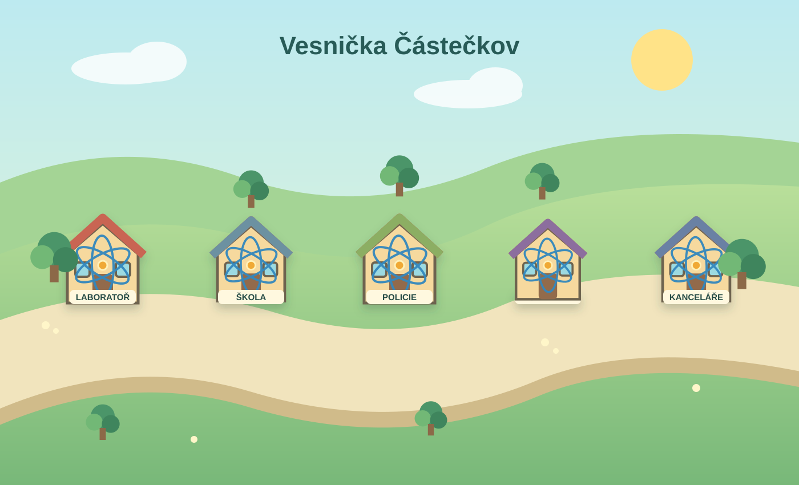

Vítej v Částečkově!
Vydej se do budov a objev, jak se chovají částice.
☀️ Ideální den na objevování
🧭Začni v Laboratoři a pozoruj částice. Ve Škole si ověříš, co už víš, a Policie připravila případ k vyřešení.
📱
Otevřít Částečkov na telefonu
Vlož veřejnou adresu stránky. QR kód otevře vesničku v režimu Žák.
QR kód bude možné vytvořit po zveřejnění stránky na webu.

☁️
☁️
PARK U POTŮČKU🌳🌲🌲🌳🌼🌷